Die Wasserbaugenossenschaft „Volkswohl“ baut in den Sauer- und Ochsenwiesen am Rande von Hettenleidelheim ein 50 m × 20 m großes Schwimmbecken. Gefüllt mit Quellwasser aus den Sauerwiesen. Eine der modernsten Badeanlagen im Bezirk Grünstadt.
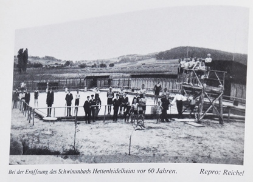Die Wasserbaugenossenschaft „Volkswohl“ baut in den Sauer- und Ochsenwiesen am Rande von Hettenleidelheim ein 50 m × 20 m großes Schwimmbecken. Gefüllt mit Quellwasser aus den Sauerwiesen. Eine der modernsten Badeanlagen im Bezirk Grünstadt.
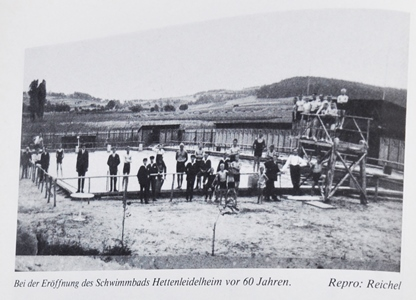Das Bad wird versteigert. Eigentümer wird die Landesversicherungsanstalt.
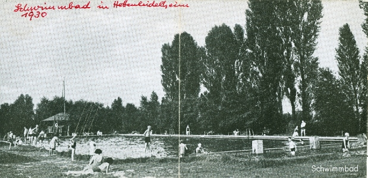Die Ortsgemeinde Hettenleidelheim übernimmt das Bad.
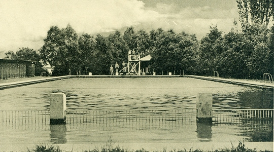Betonboden des Beckens erneuert; Quellen neu gefasst.
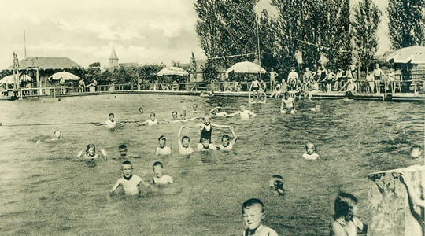Liegeflächen erweitert; Massivbau für Sanitär, Umkleiden, Kasse und Wirtschaft.
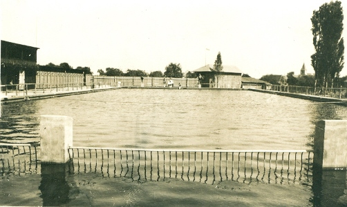Wasseranschluss an das reguläre Leitungsnetz.
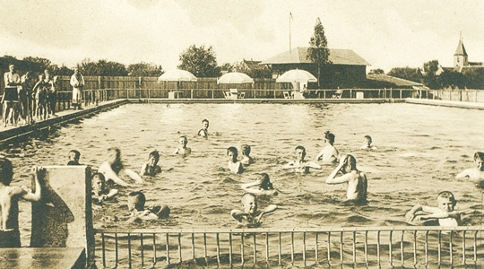Neues Kinderplanschbecken; Schwimmbeckenanstrich und Dusche.
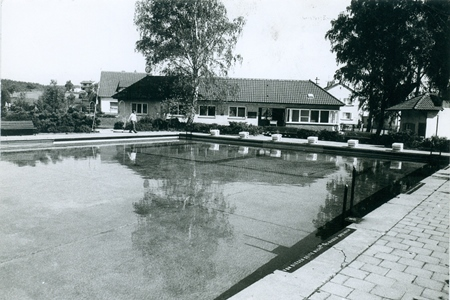Betrieb und Unterhaltung bei der Verbandsgemeinde; Kosten 50/50 mit Ortsgemeinde.
Technik-Pavillon errichtet.
Neuer Umkleidebereich als Pavillon.
Neugestaltung des Beckenbereichs mit Trennung in Schwimmer- und Nichtschwimmerbecken.

Übernahme der Trägerschaft durch Verbandsgemeinde.

Neue, unfallsichere Umrandung für das Baby-Planschbecken (Förderverein).

Gründung einer AöR statt Übernahme in die Verbandsgemeinde.

Nachtabdeckung für das Schwimmerbecken; barrierefreier Weg; SWR berichtet.
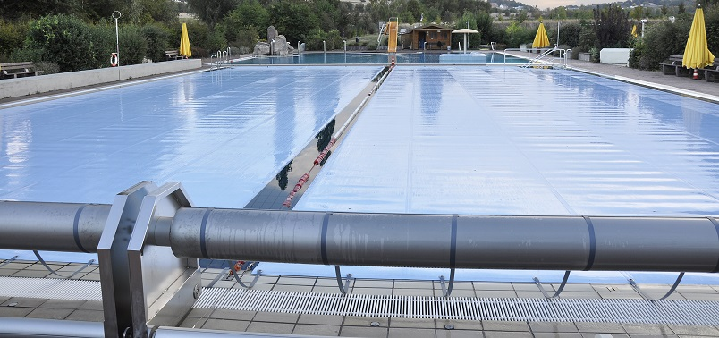 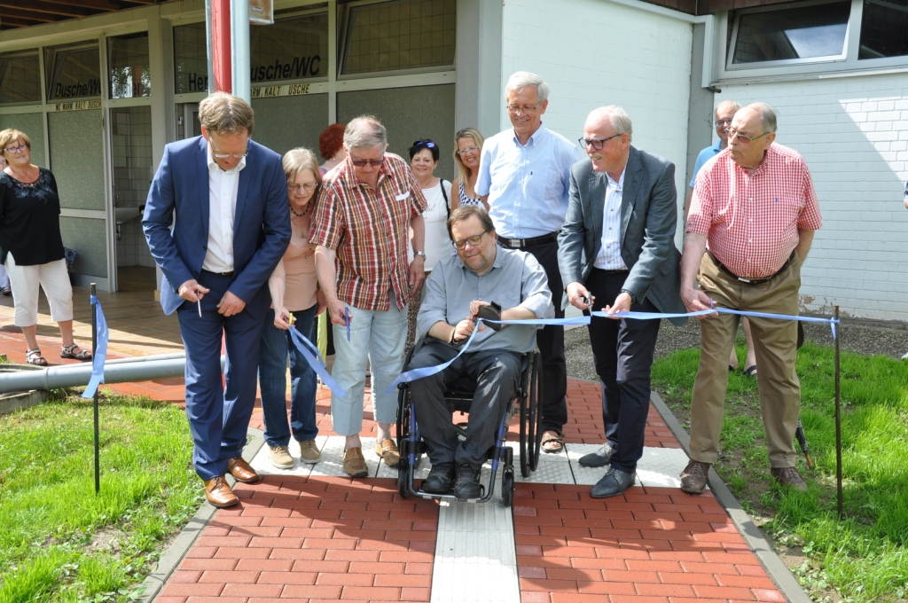
Barrierefreies Durchschreitebecken; E‑Bike-Ladestation; Begegnungsplatz.
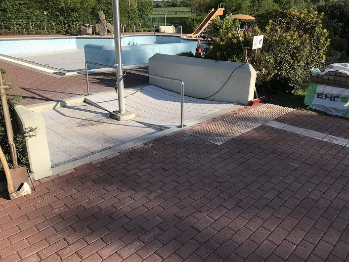 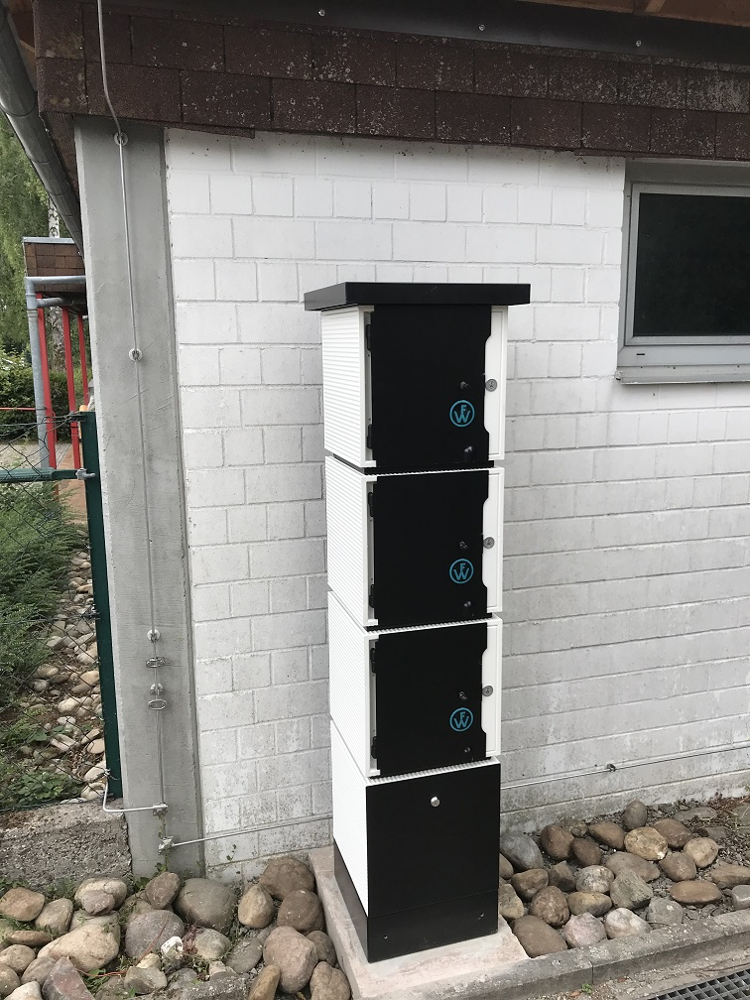 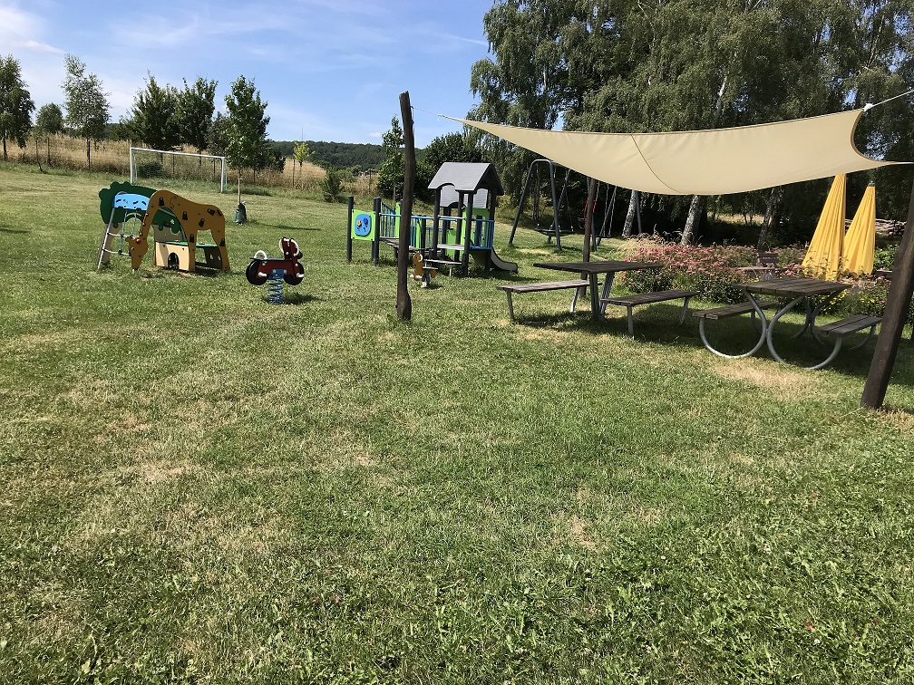Neue Spiralumkleidekabinen (Spende); Beginn Spielplatzaufbau.
 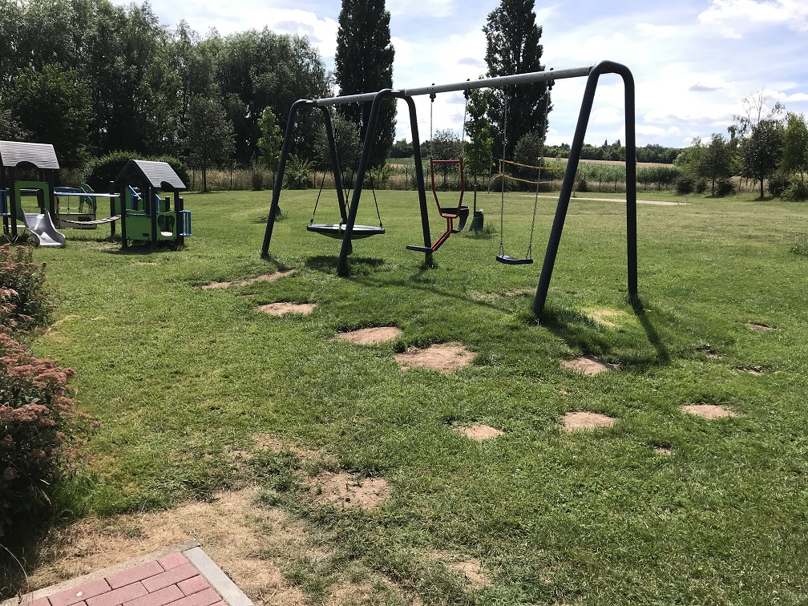
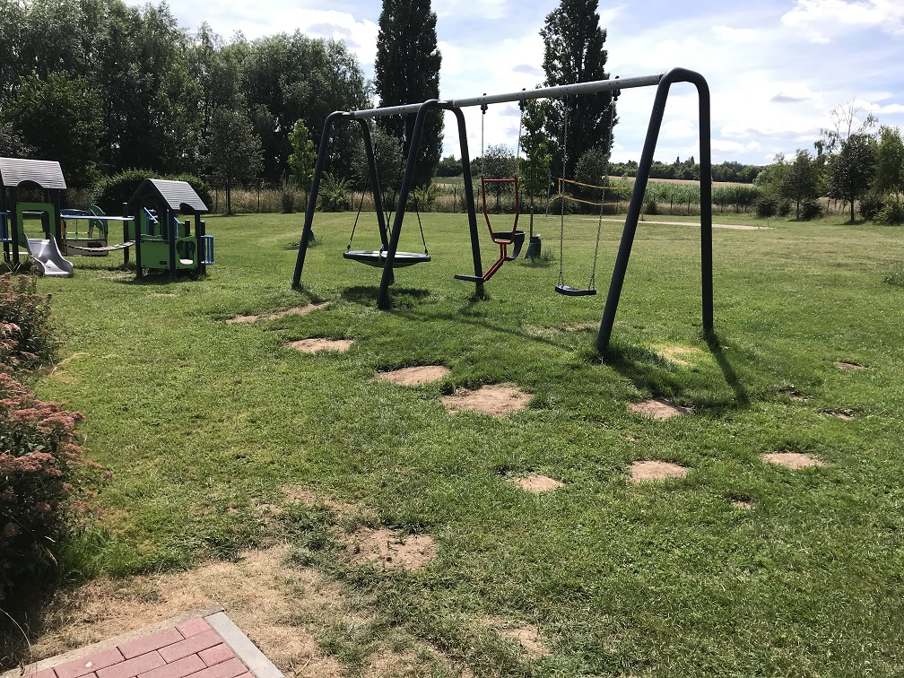
Neue Fahrrad-Abstellbögen.
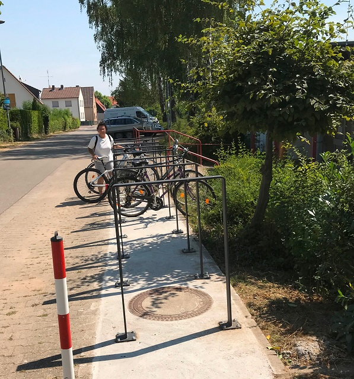Erweiterung Spielplatz; zwei Drehspielgeräte und zwei Balancierbalken.

Neue Wertschließfächer (innen und außen) mit USB/Schuko; Edelstahlreck; Solar-Sitzbank (ibench); Bodentrampolin; versetzte Tischtennisplatte.
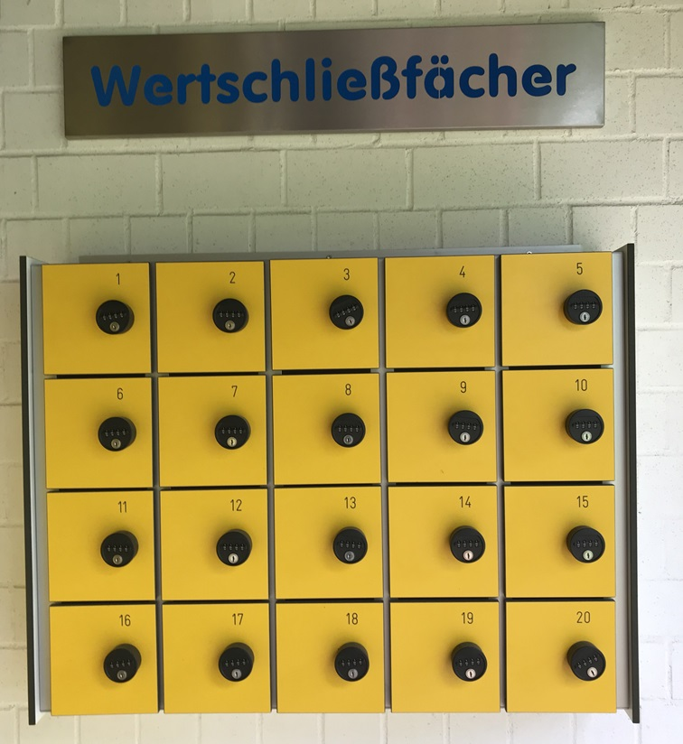 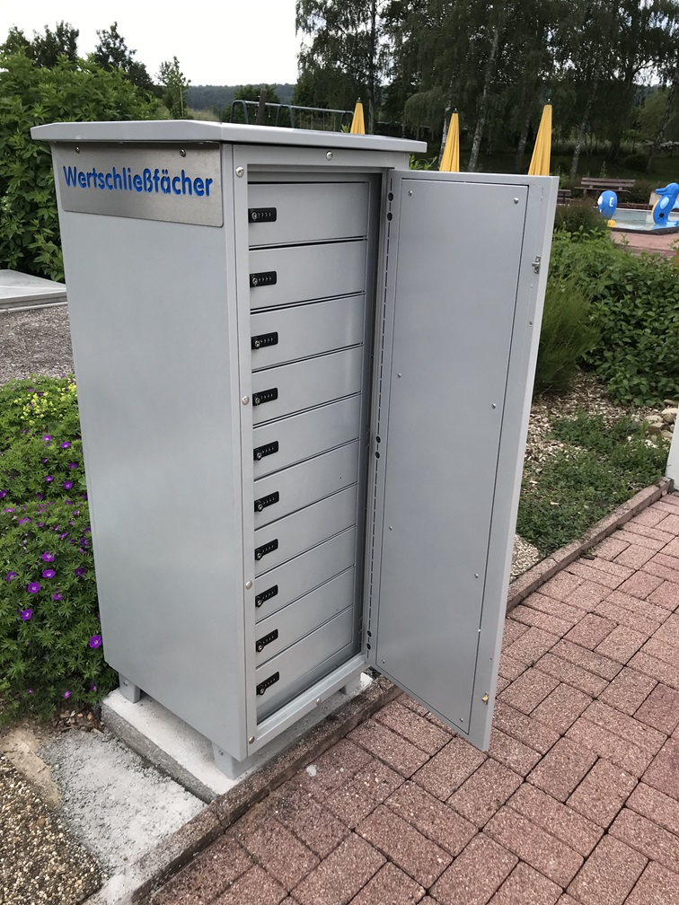 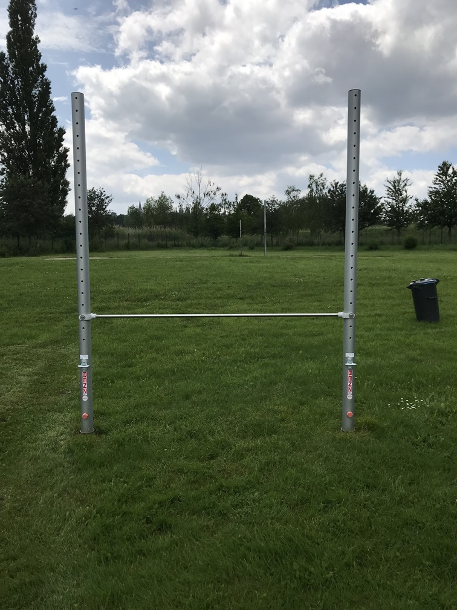 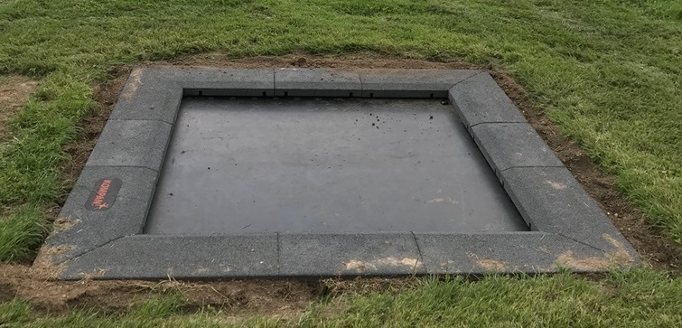
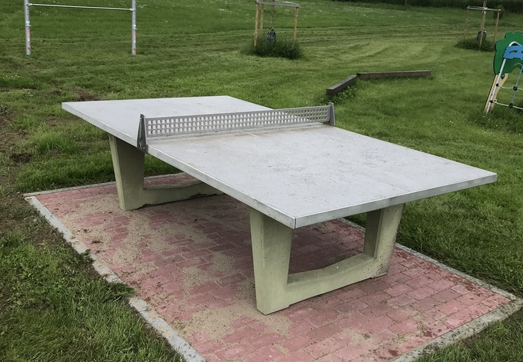
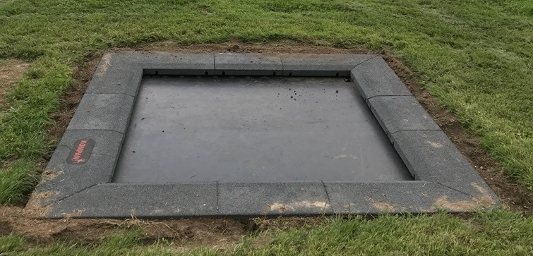
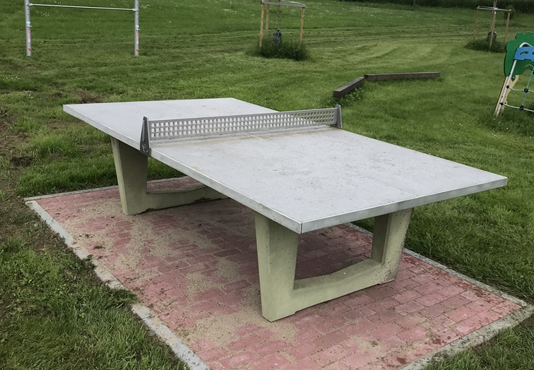